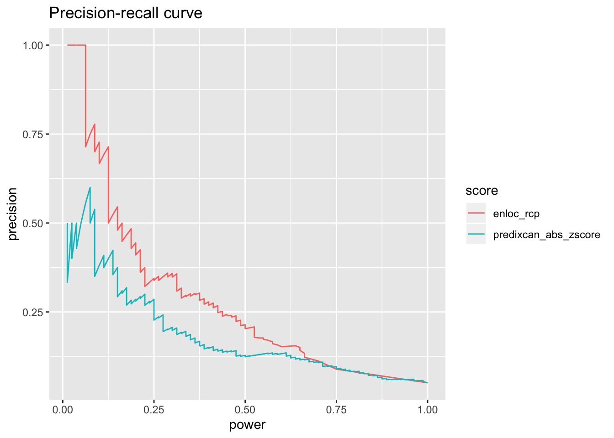
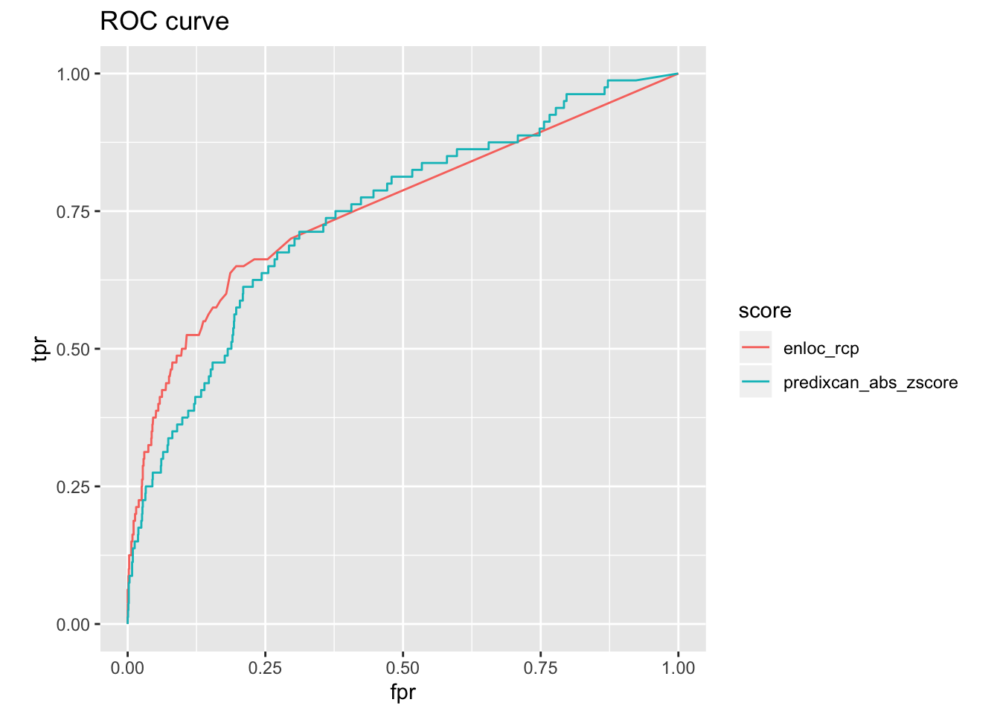

rm(list = ls())
library(ggplot2)
library(dplyr)##
## Attaching package: 'dplyr'## The following objects are masked from 'package:stats':
##
## filter, lag## The following objects are masked from 'package:base':
##
## intersect, setdiff, setequal, unionlibrary(pander)
panderOptions('table.split.table', Inf)Install SilverStandardPerformance
devtools::install_github('liangyy/silver-standard-performance')## Skipping install of 'SilverStandardPerformance' from a github remote, the SHA1 (acd65c56) has not changed since last install.
## Use `force = TRUE` to force installationlibrary(SilverStandardPerformance)Silver standard has several limitations. And here is a incomplete list of these limitations:
To partially address the limitation, we recommend to perform the silver standard analysis limiting to a specific subset of trait/gene candidates, which are:
5e-8) if you want to include slightly more candidates (enlarge the data usage)We implement the criteria to include a trait/gene candidates as mentioned above in the pre-processing step in the silver standard function. To do so, you should provide extra input: 1. GWAS loci by trait, and 2. gene annotation telling the position of the gene along the genome (don’t worry, this is provided along with the package).
Although we’ve introduced the extra pre-processing step to reduce the limitation of the imperfect silver standard, you should be cautious that the analysis is still far from perfect. For instance, we think that to use silver standard for evaluation of performance - Could be conservative in estimating the precision - Could favor methods assigning more weights to coding variations - Could favor methods with conservative nature (select genes with large effect and tend not to select genes with weaker effect)
Here we show you a self-contained working example to guide you through the silver standard analysis pipeline. For the sake of simplicity, we perform the silver standard analysis stated in GTEx GWAS paper using rare variant-based silver standard.
data("rare_variant_based_silver_standard")The rare variant-based silver standard includes only height and some lipid traits. So that we hand pick the relevant traits from GTEx GWAS paper and hand code the best match (to our knowledge) EFO and HPO terms for them.
Note that we are somewhat cheating here since we know the silver standard too well and we know which EFO/HPO terms are used there. To get a general sense on what the silver standard contains and what EFO/HPO terms to use the achieve reasonable mapping, please take a look at this post.
map_table = data.frame(
trait = c('UKB_50_Standing_height', 'GLGC_Mc_LDL', 'GLGC_Mc_HDL', 'GLGC_Mc_TG', 'UKB_20002_1473_self_reported_high_cholesterol'),
EFO = c('EFO:0004339', 'EFO:0004611', 'EFO:0004612', 'EFO:0004530', NA),
HPO = c(NA, NA, NA, NA, 'HP:0003119')
)
map_table %>% pander(caption = 'Map table')| trait | EFO | HPO |
|---|---|---|
| UKB_50_Standing_height | EFO:0004339 | NA |
| GLGC_Mc_LDL | EFO:0004611 | NA |
| GLGC_Mc_HDL | EFO:0004612 | NA |
| GLGC_Mc_TG | EFO:0004530 | NA |
| UKB_20002_1473_self_reported_high_cholesterol | NA | HP:0003119 |
Then, we should prepare the score table. PrediXcan and enloc were ran transcriptome-wide (include all ‘cis-heritable genes’), we query the results in BigQuery and select the “best” signal across all 49 tissues for each trait-gene pair.
library(bigrquery)
sql_predixcan = "SELECT gene, phenotype, zscore from (select gene, phenotype, ARRAY_AGG(zscore order by abs(zscore) desc limit 1) arr FROM `gtex-awg-im.GTEx_V8_PF_MASHR_EUR_v1.spredixcan_eqtl` where phenotype in ('UKB_50_Standing_height', 'GLGC_Mc_LDL', 'GLGC_Mc_HDL', 'GLGC_Mc_TG', 'UKB_20002_1473_self_reported_high_cholesterol') group by gene, phenotype), unnest(arr) zscore"
sql_enloc = "SELECT molecular_qtl_trait, phenotype, locus_rcp from (select molecular_qtl_trait, phenotype, ARRAY_AGG(locus_rcp order by locus_rcp desc limit 1) arr FROM `gtex-awg-im.GTEx_V8_ENLOC.enloc_eqtl_eur` where phenotype in ('UKB_50_Standing_height', 'GLGC_Mc_LDL', 'GLGC_Mc_HDL', 'GLGC_Mc_TG', 'UKB_20002_1473_self_reported_high_cholesterol') group by molecular_qtl_trait, phenotype), unnest(arr) locus_rcp"
tb_predixcan = bq_dataset_query(bq_dataset('gtex-awg-im', 'GTEx_V8_PF_MASHR_EUR_v1'), query = sql_predixcan)## Using an auto-discovered, cached token.
## To suppress this message, modify your code or options to clearly consent to the use of a cached token.
## See gargle's "Non-interactive auth" vignette for more details:
## https://gargle.r-lib.org/articles/non-interactive-auth.html
## The bigrquery package is using a cached token for yanyu018@gmail.com.## Auto-refreshing stale OAuth token.##
Running job 'gtex-awg-im.job_UC8VmJRl5Q0jYO5-Dxwb37CDnt_1.US' [-] 1s
Running job 'gtex-awg-im.job_UC8VmJRl5Q0jYO5-Dxwb37CDnt_1.US' [\] 2s
Running job 'gtex-awg-im.job_UC8VmJRl5Q0jYO5-Dxwb37CDnt_1.US' [|] 2s
Running job 'gtex-awg-im.job_UC8VmJRl5Q0jYO5-Dxwb37CDnt_1.US' [/] 3s
Running job 'gtex-awg-im.job_UC8VmJRl5Q0jYO5-Dxwb37CDnt_1.US' [-] 3s
Running job 'gtex-awg-im.job_UC8VmJRl5Q0jYO5-Dxwb37CDnt_1.US' [\] 3s
Running job 'gtex-awg-im.job_UC8VmJRl5Q0jYO5-Dxwb37CDnt_1.US' [|] 4s
Running job 'gtex-awg-im.job_UC8VmJRl5Q0jYO5-Dxwb37CDnt_1.US' [/] 4s
Running job 'gtex-awg-im.job_UC8VmJRl5Q0jYO5-Dxwb37CDnt_1.US' [-] 4s
## Complete
## Billed: 4.81 GBtb_enloc = bq_dataset_query(bq_dataset('gtex-awg-im', 'GTEx_V8_ENLOC'), query = sql_enloc)##
Running job 'gtex-awg-im.job_svKTePvZ6RAO83mqrSzkY3VykrR_.US' [-] 1s
Running job 'gtex-awg-im.job_svKTePvZ6RAO83mqrSzkY3VykrR_.US' [\] 1s
Running job 'gtex-awg-im.job_svKTePvZ6RAO83mqrSzkY3VykrR_.US' [|] 2s
Running job 'gtex-awg-im.job_svKTePvZ6RAO83mqrSzkY3VykrR_.US' [/] 2s
Running job 'gtex-awg-im.job_svKTePvZ6RAO83mqrSzkY3VykrR_.US' [-] 2s
Running job 'gtex-awg-im.job_svKTePvZ6RAO83mqrSzkY3VykrR_.US' [\] 3s
Running job 'gtex-awg-im.job_svKTePvZ6RAO83mqrSzkY3VykrR_.US' [|] 3s
Running job 'gtex-awg-im.job_svKTePvZ6RAO83mqrSzkY3VykrR_.US' [/] 3s
Running job 'gtex-awg-im.job_svKTePvZ6RAO83mqrSzkY3VykrR_.US' [-] 4s
Running job 'gtex-awg-im.job_svKTePvZ6RAO83mqrSzkY3VykrR_.US' [\] 4s
Running job 'gtex-awg-im.job_svKTePvZ6RAO83mqrSzkY3VykrR_.US' [|] 4s
Running job 'gtex-awg-im.job_svKTePvZ6RAO83mqrSzkY3VykrR_.US' [/] 4s
Running job 'gtex-awg-im.job_svKTePvZ6RAO83mqrSzkY3VykrR_.US' [-] 5s
Running job 'gtex-awg-im.job_svKTePvZ6RAO83mqrSzkY3VykrR_.US' [\] 5s
Running job 'gtex-awg-im.job_svKTePvZ6RAO83mqrSzkY3VykrR_.US' [|] 6s
Running job 'gtex-awg-im.job_svKTePvZ6RAO83mqrSzkY3VykrR_.US' [/] 6s
Running job 'gtex-awg-im.job_svKTePvZ6RAO83mqrSzkY3VykrR_.US' [-] 6s
Running job 'gtex-awg-im.job_svKTePvZ6RAO83mqrSzkY3VykrR_.US' [\] 6s
Running job 'gtex-awg-im.job_svKTePvZ6RAO83mqrSzkY3VykrR_.US' [|] 7s
Running job 'gtex-awg-im.job_svKTePvZ6RAO83mqrSzkY3VykrR_.US' [/] 7s
Running job 'gtex-awg-im.job_svKTePvZ6RAO83mqrSzkY3VykrR_.US' [-] 8s
Running job 'gtex-awg-im.job_svKTePvZ6RAO83mqrSzkY3VykrR_.US' [\] 8s
Running job 'gtex-awg-im.job_svKTePvZ6RAO83mqrSzkY3VykrR_.US' [|] 9s
Running job 'gtex-awg-im.job_svKTePvZ6RAO83mqrSzkY3VykrR_.US' [/] 9s
Running job 'gtex-awg-im.job_svKTePvZ6RAO83mqrSzkY3VykrR_.US' [-] 9s
Running job 'gtex-awg-im.job_svKTePvZ6RAO83mqrSzkY3VykrR_.US' [\] 9s
Running job 'gtex-awg-im.job_svKTePvZ6RAO83mqrSzkY3VykrR_.US' [|] 10s
Running job 'gtex-awg-im.job_svKTePvZ6RAO83mqrSzkY3VykrR_.US' [/] 10s
Running job 'gtex-awg-im.job_svKTePvZ6RAO83mqrSzkY3VykrR_.US' [-] 10s
Running job 'gtex-awg-im.job_svKTePvZ6RAO83mqrSzkY3VykrR_.US' [\] 10s
Running job 'gtex-awg-im.job_svKTePvZ6RAO83mqrSzkY3VykrR_.US' [|] 10s
## Complete
## Billed: 1.95 GBdf_predixcan = bq_table_download(tb_predixcan)## Downloading 112,512 rows in 12 pages.
##
Downloading data [===================>--------------------] 50% ETA: 1s
Downloading data [======================>-----------------] 58% ETA: 1s
Downloading data [==========================>-------------] 67% ETA: 1s
Downloading data [=============================>----------] 75% ETA: 1s
Downloading data [================================>-------] 83% ETA: 0s
Downloading data [====================================>---] 92% ETA: 0s
Downloading data [========================================] 100% ETA: 0s
##
Parsing [=====-------------------------------------------------] ETA: 0s
Parsing [======================================================] ETA: 0s
df_enloc = bq_table_download(tb_enloc)## Downloading 38,570 rows in 4 pages.##
Parsing [==============----------------------------------------] ETA: 0s
Parsing [======================================================] ETA: 0s
df_predixcan = df_predixcan %>% mutate(gene = unlist(lapply(strsplit(gene, '\\.'), function(x) {x[1]})))
df_enloc = df_enloc %>% rename(gene = molecular_qtl_trait) %>% mutate(gene = unlist(lapply(strsplit(gene, '\\.'), function(x) {x[1]})))
score_table_predixcan = df_predixcan %>% mutate(predixcan_abs_zscore = abs(zscore)) %>% select(phenotype, gene, predixcan_abs_zscore) %>% rename(trait = phenotype)
score_table_enloc = df_enloc %>% select(phenotype, gene, locus_rcp) %>% rename(trait = phenotype, enloc_rcp = locus_rcp)
score_table_predixcan = as.data.frame(score_table_predixcan)
score_table_enloc = as.data.frame(score_table_enloc)Note that only cis-heritable genes are included in the BigQuery table. In the GTEx GWAS paper, we included all protein coding genes including non-cis-heritable genes (we set their scores to zeros) To do so, we need to load the gene annotation file including all genes
data('gene_annotation_gencode_v26_hg38')
protein_coding_genes = gene_annotation_gencode_v26_hg38$gene_annotation %>% filter(gene_type == 'protein_coding') %>% pull(gene_id)
score_table_predixcan = score_table_predixcan %>% filter(gene %in% protein_coding_genes)
score_table_enloc = score_table_enloc %>% filter(gene %in% protein_coding_genes)
for(t in unique(score_table_predixcan$trait)) {
extra_predixcan = data.frame(trait = t, gene = protein_coding_genes[!protein_coding_genes %in% (score_table_predixcan %>% filter(trait == t) %>% pull(gene))], predixcan_abs_zscore = 0)
extra_enloc = data.frame(trait = t, gene = protein_coding_genes[!protein_coding_genes %in% (score_table_enloc %>% filter(trait == t) %>% pull(gene))], enloc_rcp = 0)
score_table_predixcan = rbind(score_table_predixcan, extra_predixcan)
score_table_enloc = rbind(score_table_enloc, extra_enloc)
}
score_table = inner_join(score_table_enloc, score_table_predixcan, by = c('trait', 'gene'))
score_table %>% head %>% pander(caption = 'score table')| trait | gene | enloc_rcp | predixcan_abs_zscore |
|---|---|---|---|
| UKB_50_Standing_height | ENSG00000087303 | 0.035 | 4.08 |
| UKB_50_Standing_height | ENSG00000108381 | 0 | 1.746 |
| UKB_50_Standing_height | ENSG00000164690 | 0 | 3.22 |
| UKB_50_Standing_height | ENSG00000085662 | 0.362 | 2.8 |
| UKB_50_Standing_height | ENSG00000113300 | 0.009 | 2.512 |
| UKB_50_Standing_height | ENSG00000109332 | 0.001 | 3.378 |
Following the GTEx GWAS paper, we define GWAS loci as LD block (by Berisa et al) containing variants with p-value < 5e-8. Again, we query the results in BigQuery to extract GWAS signals
sql_gwas = "SELECT * FROM `gtex-awg-im.GWAS_all.formatted_gwas` where phenotype in ('UKB_50_Standing_height', 'GLGC_Mc_LDL', 'GLGC_Mc_HDL', 'GLGC_Mc_TG', 'UKB_20002_1473_self_reported_high_cholesterol') and pvalue < 5e-8"
tb_gwas = bq_dataset_query(bq_dataset('gtex-awg-im', 'GWAS_all'), query = sql_gwas)##
Running job 'gtex-awg-im.job_m9jRZIim--rinyDpwFksyVW1E7wR.US' [-] 1s
Running job 'gtex-awg-im.job_m9jRZIim--rinyDpwFksyVW1E7wR.US' [\] 1s
Running job 'gtex-awg-im.job_m9jRZIim--rinyDpwFksyVW1E7wR.US' [|] 2s
Running job 'gtex-awg-im.job_m9jRZIim--rinyDpwFksyVW1E7wR.US' [/] 2s
Running job 'gtex-awg-im.job_m9jRZIim--rinyDpwFksyVW1E7wR.US' [-] 3s
Running job 'gtex-awg-im.job_m9jRZIim--rinyDpwFksyVW1E7wR.US' [\] 3s
Running job 'gtex-awg-im.job_m9jRZIim--rinyDpwFksyVW1E7wR.US' [|] 3s
Running job 'gtex-awg-im.job_m9jRZIim--rinyDpwFksyVW1E7wR.US' [/] 3s
Running job 'gtex-awg-im.job_m9jRZIim--rinyDpwFksyVW1E7wR.US' [-] 4s
Running job 'gtex-awg-im.job_m9jRZIim--rinyDpwFksyVW1E7wR.US' [\] 4s
Running job 'gtex-awg-im.job_m9jRZIim--rinyDpwFksyVW1E7wR.US' [|] 4s
Running job 'gtex-awg-im.job_m9jRZIim--rinyDpwFksyVW1E7wR.US' [/] 4s
Running job 'gtex-awg-im.job_m9jRZIim--rinyDpwFksyVW1E7wR.US' [-] 5s
Running job 'gtex-awg-im.job_m9jRZIim--rinyDpwFksyVW1E7wR.US' [\] 5s
Running job 'gtex-awg-im.job_m9jRZIim--rinyDpwFksyVW1E7wR.US' [|] 5s
Running job 'gtex-awg-im.job_m9jRZIim--rinyDpwFksyVW1E7wR.US' [/] 6s
Running job 'gtex-awg-im.job_m9jRZIim--rinyDpwFksyVW1E7wR.US' [-] 6s
Running job 'gtex-awg-im.job_m9jRZIim--rinyDpwFksyVW1E7wR.US' [\] 6s
Running job 'gtex-awg-im.job_m9jRZIim--rinyDpwFksyVW1E7wR.US' [|] 6s
## Complete
## Billed: 102.85 GBdf_gwas = bq_table_download(tb_gwas)## Downloading 156,133 rows in 16 pages.
##
Downloading data [=>--------------------------------------] 6% ETA: 25s
Downloading data [====>-----------------------------------] 12% ETA: 12s
Downloading data [=======>--------------------------------] 19% ETA: 8s
Downloading data [=========>------------------------------] 25% ETA: 7s
Downloading data [===========>----------------------------] 31% ETA: 5s
Downloading data [==============>-------------------------] 38% ETA: 4s
Downloading data [=================>----------------------] 44% ETA: 4s
Downloading data [===================>--------------------] 50% ETA: 4s
Downloading data [=====================>------------------] 56% ETA: 3s
Downloading data [========================>---------------] 62% ETA: 3s
Downloading data [===========================>------------] 69% ETA: 2s
Downloading data [=============================>----------] 75% ETA: 2s
Downloading data [===============================>--------] 81% ETA: 1s
Downloading data [==================================>-----] 88% ETA: 1s
Downloading data [=====================================>--] 94% ETA: 0s
Downloading data [========================================] 100% ETA: 0s
##
Parsing [===---------------------------------------------------] ETA: 0s
Parsing [=================-------------------------------------] ETA: 0s
Parsing [====================----------------------------------] ETA: 0s
Parsing [========================------------------------------] ETA: 0s
Parsing [===========================---------------------------] ETA: 0s
Parsing [==============================------------------------] ETA: 0s
Parsing [==================================--------------------] ETA: 0s
Parsing [=====================================-----------------] ETA: 0s
Parsing [=========================================-------------] ETA: 0s
Parsing [============================================----------] ETA: 0s
Parsing [===============================================-------] ETA: 0s
Parsing [===================================================---] ETA: 0s
Parsing [======================================================] ETA: 0s
df_gwas = as.data.frame(df_gwas)
gwas_lead = df_gwas %>% select(chromosome , position, panel_variant_id, trait = phenotype)
gwas_lead %>% head %>% pander(caption = 'GWAS signal in data.frame')| chromosome | position | panel_variant_id | trait |
|---|---|---|---|
| chr1 | 39238175 | chr1_39238175_G_A_b38 | GLGC_Mc_HDL |
| chr1 | 39282599 | chr1_39282599_G_A_b38 | GLGC_Mc_HDL |
| chr1 | 39380595 | chr1_39380595_G_A_b38 | GLGC_Mc_HDL |
| chr1 | 39429788 | chr1_39429788_G_A_b38 | GLGC_Mc_HDL |
| chr1 | 39442834 | chr1_39442834_G_A_b38 | GLGC_Mc_HDL |
| chr1 | 39599289 | chr1_39599289_G_A_b38 | GLGC_Mc_HDL |
In principle, you can define the GWAS locus using your own definition. For your convenience, we provide a function to extract LD blocks containing GWAS signals as the set of GWAS loci for downstream analysis.
df_gwas = SilverStandardPerformance:::gwas_hit_to_gwas_loci_by_ld_block(gwas_hit = gwas_lead, ld_block_pickrell_eur_b38)## The genome assembly version of ld block is hg38. Please make sure your gwas_hit matches the version!df_gwas %>% head %>% pander(caption = 'GWAS loci')| chromosome | position | panel_variant_id | trait | region_name | start | end |
|---|---|---|---|---|---|---|
| chr1 | 39238175 | chr1_39238175_G_A_b38 | GLGC_Mc_HDL | chr1_24 | 38266175 | 39734895 |
| chr1 | 39282599 | chr1_39282599_G_A_b38 | GLGC_Mc_HDL | chr1_24 | 38266175 | 39734895 |
| chr1 | 39380595 | chr1_39380595_G_A_b38 | GLGC_Mc_HDL | chr1_24 | 38266175 | 39734895 |
| chr1 | 39429788 | chr1_39429788_G_A_b38 | GLGC_Mc_HDL | chr1_24 | 38266175 | 39734895 |
| chr1 | 39442834 | chr1_39442834_G_A_b38 | GLGC_Mc_HDL | chr1_24 | 38266175 | 39734895 |
| chr1 | 39599289 | chr1_39599289_G_A_b38 | GLGC_Mc_HDL | chr1_24 | 38266175 | 39734895 |
Now that you’ve prepared everything you need.
out = silver_standard_perf(score_table, map_table, rare_variant_based_silver_standard, df_gwas, gene_annotation_gencode_v26_hg38$gene_annotation, trait_codes = c('EFO', 'HPO'))## Run with silver standard from: gen_ewas_rare_variant_gene_list.R## Map trait by: EFO ,HPO## Mapper chosen: greedy_map## Extracting all columns of score_table other than "trait" and "gene" as scores## 2 score columns are used## Warning: Column `EFO` joining factor and character vector, coercing into
## character vector## Warning: Column `HPO` joining factor and character vector, coercing into
## character vector## # trait-gene pairs in score table before step 2: 98995## Start pre-processing step: limit to (1) GWAS loci with silver standard genes and (2) genes overlapping in selected GWAS loci## Pre-processing step 1: select GWAS loci with silver standard genes## Pre-processing step 2: select candidate gens overlapping selected GWAS loci## # trait-gene pairs in score table after step 2: 1572out$roc_auc %>% pander(caption = 'ROC AUC')| roc_auc | score |
|---|---|
| 0.7544 | enloc_rcp |
| 0.7426 | predixcan_abs_zscore |
out$pr + ggtitle('Precision-recall curve')
out$roc + ggtitle('ROC curve')
When using the pre-processing functionality, please be aware of the fact that it relies on genomic position (GWAS locus is defined as a genomic region). So, the genome assembly version really matters. At the minimal, the two input variables required for pre-processing: gwas_loci and gene_annotation should use the same genome assembly version. The best practice is to use the gene annotation provided by the package, e.g. gene_annotation_gencode_v26_hg38, which uses hg38. Other gene annotations are under-development (without guarantee) and we really encourage people to contribute new gene annotations (a better one? one with other version, hg19?) If you want to contribute, please take a look at the help page of current annotation (for instance, you can type ?gene_annotation_gencode_v26_hg38 in R environment) for how it is structured.
Similarly, the handy function SilverStandardPerformance:::gwas_hit_to_gwas_loci_by_ld_block converting GWAS signals (position of GWAS significant SNPs) to GWAS loci on the basis of LD block is also genome assembly version sensitive. Currently, we only have one LD block dataset shared along with the package, ld_block_pickrell_eur_b38, which is based on Berisa et al. The LD block is for Europeans and it is in hg38. Again, we encourage people to contribute other LD blocks (in other population? one with other version, hg19?)